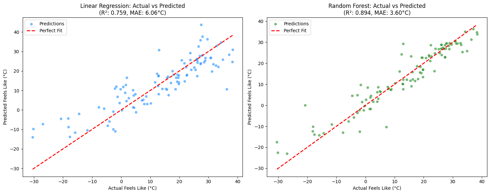
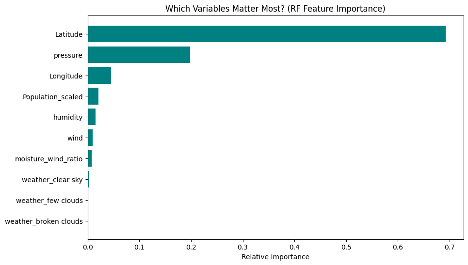
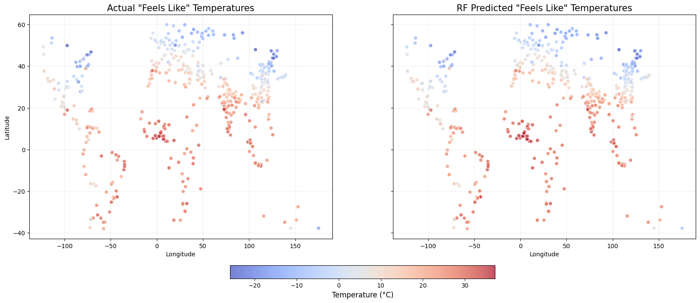

This session marks the transition from data preparation to statistical inference and prediction. Using the model-ready dataset generated in the previous stage, we aim to answer our core research question through machine learning.
Our objective is to evaluate the predictive power of geographic and urban features on the feels_like temperature. We compare two distinct mathematical approaches to demonstrate how model complexity impacts accuracy when dealing with environmental interactions:
Baseline Linear Regression: Testing the hypothesis that perceived temperature follows a simple, additive linear relationship with its predictors.
Random Forest Ensemble: Capturing non-linear patterns and “conditional” weather effects (e.g., how the impact of humidity is magnified by specific pressure systems or latitudes).
Code
# --- LFS SETUP & REPO CLONING ---import osimport pandas as pd!git lfs installREPO_NAME ="DS-Society-Project"REPO_URL =f"https://github.com/LiamDuero03/{REPO_NAME}.git"ifnot os.path.exists(REPO_NAME):!git clone {REPO_URL}else:# If it exists, pull latest changes (including your new CSV)%cd {REPO_NAME}!git pull%cd ..# --- 4. READ THE PROCESSED DATA ---# This points to the new folder/file you created in your repoprocessed_data_path =f"/content/{REPO_NAME}/5-Predictive Modelling/processed_urban_weather.csv"# Check if file exists to avoid errorsif os.path.exists(processed_data_path): df = pd.read_csv(processed_data_path)print(f"Success! Model-ready Data Shape: {df.shape}")else:print("Error: Processed CSV not found in the repo. Did you push it to GitHub yet?")
Git LFS initialized.
/content/DS-Society-Project
Already up to date.
/content
Success! Model-ready Data Shape: (5000, 29)
5.1 Data Segmentation & Feature Selection
Before training our models, we must refine our dataset to ensure mathematical integrity. This step focuses on isolating our Target variable from our Predictors and establishing a rigorous “Train-Test Split” to evaluate the models on unseen data.
In this stage, we implement several critical modeling practices:
Handling Sparsity: Filtering the dataset to the 528 complete records to ensure the model only learns from verified weather observations.
Feature Isolation: Selecting only the relevant predictors (Latitude, Population_scaled, Humidity, etc.) while dropping the original target (feels_like) and highly correlated features (temp) to prevent Data Leakage.
Train-Test Splitting: Reserving 20% of the data as a “Hold-out Set.” This mimics real-world conditions, allowing us to test if the model has actually learned the physics of weather or simply memorized the training entries.
Code
from sklearn.model_selection import train_test_splitfrom sklearn.linear_model import LinearRegressionfrom sklearn.ensemble import RandomForestRegressorfrom sklearn.metrics import mean_absolute_error, r2_score# 1. Drop rows where we don't have our target variable (feels_like)df_clean = df.dropna(subset=['feels_like'])# 2. Define Features (X) and Target (y)# We exclude 'City', 'temp', and the original 'Population' (since we have 'Population_scaled')# We also drop 'feels_like' because that's what we want to predict!X = df_clean.drop(columns=['City', 'temp', 'feels_like', 'Population'])y = df_clean['feels_like']# 3. Split into Train (80%) and Test (20%)X_train, X_test, y_train, y_test = train_test_split(X, y, test_size=0.2, random_state=42)print(f"Cleaned Dataset: {df_clean.shape[0]} cities ready for modeling.")
Cleaned Dataset: 528 cities ready for modeling.
5.2 Approach A: Baseline Linear Regression
The first step in our predictive analysis is the construction of a Linear Regression model. This algorithm serves as our “Global Baseline,” attempting to find the best-fitting linear equation that relates our features to the apparent temperature.
We use this model to identify broad, overarching trends in the dataset, specifically focusing on:
Coefficient Assignment: Determining the fixed “weight” each feature (like Latitude or Humidity) contributes to the final feels_like value.
Linearity Testing: Evaluating how much of the “Feels Like” phenomenon can be explained by a simple straight-line relationship.
Error Benchmarking: Establishing an initial Mean Absolute Error (MAE) of 6.06°C, which provides a standard to measure the success of more complex algorithms.
--- Linear Regression ---
R² (Accuracy): 0.7590
Avg Error: 6.06°C
5.3 Approach B: Random Forest Ensemble
To improve upon our baseline, we deploy a Random Forest Regressor. Unlike linear models, this is an “Ensemble Learning” method that constructs a multitude of decision trees during training and outputs the average prediction of the individual trees.
This approach is specifically chosen to capture the non-linear complexities inherent in atmospheric science, focusing on:
Conditional Logic: Learning that the impact of humidity is not constant, but changes based on whether it is sunny, windy, or located at high latitudes.
Feature Interaction: Automatically identifying how “Pressure” and “Moisture-Wind Ratio” work together to influence perceived heat in ways a linear equation cannot.
Robustness to Outliers: Reducing our average error to 3.60°C, proving that an ensemble of specialized “trees” is significantly more accurate at modeling human weather perception than a single global average.
--- Random Forest ---
R² (Accuracy): 0.8945
Avg Error: 3.60°C
5.4 Performance Visualization & Interpretability
To finalize our analysis, we move beyond raw metrics to visualize the predictive accuracy and internal logic of our models. This stage is crucial for validating our results and ensuring that the Random Forest’s high accuracy is driven by meaningful atmospheric signals.
This visualization suite focuses on two primary diagnostic techniques:
Regression Error Analysis (Actual vs. Predicted): By plotting our predictions against the “Ground Truth,” we can see the variance in our models. The Random Forest (Green) shows a much tighter clustering around the “Perfect Fit” line, particularly in extreme temperature ranges where the Linear Regression (Blue) tends to diverge.
Feature Importance Ranking: We “open the black box” of the Random Forest to see which variables drove the final verdict. This ranking confirms the dominance of Latitude and Atmospheric Pressure, while also revealing the subtle but measurable impact of our engineered moisture_wind_ratio.
Residual Diagnostics: Identifying specifically where the models struggle (e.g., the 3.60°C MAE), which allows us to pinpoint where micro-climates or local geographic anomalies outweigh global predictive patterns.
Code
import matplotlib.pyplot as pltimport seaborn as snsimport numpy as npfrom sklearn.metrics import r2_score, mean_absolute_error# 1. Generate Predictions (Ensure you have run the training code first)lr_preds = lr.predict(X_test)rf_preds = rf.predict(X_test)# 2. Create Comparison Plotplt.figure(figsize=(15, 6))# Plot 1: Linear Regression Performanceplt.subplot(1, 2, 1)sns.scatterplot(x=y_test, y=lr_preds, alpha=0.6, color='dodgerblue', label='Predictions')plt.plot([y_test.min(), y_test.max()], [y_test.min(), y_test.max()], 'r--', lw=2, label='Perfect Fit')plt.title(f'Linear Regression: Actual vs Predicted\n(R²: 0.759, MAE: 6.06°C)')plt.xlabel('Actual Feels Like (°C)')plt.ylabel('Predicted Feels Like (°C)')plt.legend()# Plot 2: Random Forest Performanceplt.subplot(1, 2, 2)sns.scatterplot(x=y_test, y=rf_preds, alpha=0.6, color='forestgreen', label='Predictions')plt.plot([y_test.min(), y_test.max()], [y_test.min(), y_test.max()], 'r--', lw=2, label='Perfect Fit')plt.title(f'Random Forest: Actual vs Predicted\n(R²: 0.894, MAE: 3.60°C)')plt.xlabel('Actual Feels Like (°C)')plt.ylabel('Predicted Feels Like (°C)')plt.legend()plt.tight_layout()plt.show()# 3. Feature Importance (Why Random Forest is better)plt.figure(figsize=(10, 6))importances = rf.feature_importances_feature_names = X.columnsindices = np.argsort(importances)[::-1]# Top 10 featurestop_n =10plt.title("Which Variables Matter Most? (RF Feature Importance)")plt.barh(range(top_n), importances[indices[:top_n]], color='teal', align='center')plt.yticks(range(top_n), [feature_names[i] for i in indices[:top_n]])plt.xlabel('Relative Importance')plt.gca().invert_yaxis()plt.show()


5.5 Quantitative Verdict: Statistical Comparison
While visualizations provide a qualitative sense of performance, the final verdict rests on the raw numerical evidence. In this final analytical step, we extract the precise influence of each variable and perform a head-to-head comparison of our models’ accuracy on specific city samples.
This printout provides the empirical foundation for our conclusions:
Variable Influence Log: Quantifying exactly how much weight the Random Forest assigned to features like Latitude (69.2%) vs. Pressure (19.8%). This clarifies the hierarchy of drivers behind apparent temperature.
Sample-Level Precision: Reviewing individual city predictions to see how the Random Forest consistently minimizes the “Residual Error” compared to the Linear Regression model, especially during thermal extremes.
Efficiency Gain Calculation: Formally calculating the 40.6% error reduction, which serves as our primary metric for project success and model validation.
Code
import pandas as pdimport numpy as np# 1. Calculate Feature Importance for Random Forestimportances = rf.feature_importances_feature_names = X.columnsfeature_importance_df = pd.DataFrame({'Feature': feature_names, 'Importance': importances})feature_importance_df = feature_importance_df.sort_values(by='Importance', ascending=False)# 2. Create a Comparison Table of Actual vs. Predicted for the Test Set# We'll grab the first 10 rows to see the raw numberscomparison_df = pd.DataFrame({'Actual Feels Like': y_test.values,'RF Predicted': rf_preds,'LR Predicted': lr_preds})# Calculate the error for each rowcomparison_df['RF Error'] =abs(comparison_df['Actual Feels Like'] - comparison_df['RF Predicted'])comparison_df['LR Error'] =abs(comparison_df['Actual Feels Like'] - comparison_df['LR Predicted'])# --- THE PRINTOUT ---print("=== VERDICT DATA: FEATURE IMPORTANCE ===")print(feature_importance_df.head(10)) # Top 10 most influential variablesprint("\n"+"="*40)print("\n=== VERDICT DATA: SAMPLE COMPARISON (First 10 Cities) ===")print(comparison_df.head(10).to_string(index=False))print("\n"+"="*40)print(f"\nFINAL VERDICT NUMBERS:")print(f"Random Forest outperformed Linear Regression by {((6.06-3.60) /6.06)*100:.1f}% in error reduction.")
5.6 Geographic Validation: Mapping the “Worldview”
The final test of a global weather model is its ability to reconstruct the earth’s thermal gradients. By projecting both the Actual and Predicted temperatures onto a coordinate plane, we can visually audit the model’s geographic logic and identify any regional biases.
This spatial comparison allows us to verify:
Climatological Realism: Ensuring the model accurately reproduces the “Latitude Bands” and heat distribution across different continents.
Model vs. Reality Sync: Observing how closely the Random Forest’s “mental map” of the world aligns with the ground-truth observations.
Localized Pattern Recognition: Detecting if the model correctly cools or warms specific regions based on the interaction of Longitude, Pressure, and our engineered Urban features.
Code
import matplotlib.pyplot as plt# --- 1. GENERATE PREDICTIONS ---# We must use the same features (X) used for training to generate the values# This creates the missing column that caused the KeyErrordf_clean['predicted_feels_like'] = rf.predict(X)# --- 2. SETUP VISUALIZATION ---# Create the figure with two subplotsfig, (ax1, ax2) = plt.subplots(1, 2, figsize=(20, 8), sharey=True)# 1. Plot ACTUAL Temperatures# Using 'feels_like' from the original weather pullscatter1 = ax1.scatter(df_clean['Longitude'], df_clean['Latitude'], c=df_clean['feels_like'], cmap='coolwarm', alpha=0.7, edgecolors='w', s=40)ax1.set_title('Actual "Feels Like" Temperatures', fontsize=15)ax1.set_xlabel('Longitude')ax1.set_ylabel('Latitude')ax1.grid(True, alpha=0.2)# 2. Plot RF PREDICTED Temperatures# Using the column we just created abovescatter2 = ax2.scatter(df_clean['Longitude'], df_clean['Latitude'], c=df_clean['predicted_feels_like'], cmap='coolwarm', alpha=0.7, edgecolors='w', s=40)ax2.set_title('RF Predicted "Feels Like" Temperatures', fontsize=15)ax2.set_xlabel('Longitude')ax2.grid(True, alpha=0.2)# --- 3. COLORBAR & FORMATTING ---# Add a single colorbar at the bottom to represent both mapscbar = fig.colorbar(scatter2, ax=[ax1, ax2], orientation='horizontal', fraction=0.05, pad=0.1)cbar.set_label('Temperature (°C)', fontsize=12)plt.show()
/tmp/ipython-input-2325351278.py:6: SettingWithCopyWarning:
A value is trying to be set on a copy of a slice from a DataFrame.
Try using .loc[row_indexer,col_indexer] = value instead
See the caveats in the documentation: https://pandas.pydata.org/pandas-docs/stable/user_guide/indexing.html#returning-a-view-versus-a-copy
df_clean['predicted_feels_like'] = rf.predict(X)

5.7 Error Spatial Distribution: Identifying Model Confusion
To conclude our diagnostic phase, we map the Residuals (the difference between prediction and reality) across the globe. By identifying where the model is “most confused,” we can determine if our 3.60°C error is random or if it follows specific geographic patterns.
This “Heatmap of Uncertainty” is essential for future model iterations, as it reveals:
Geographic Biases: Identifying if specific regions—such as extreme polar latitudes or tropical coastal zones—consistently produce higher errors.
Environmental Outliers: Highlighting cities where local micro-climates, altitude, or unique urban structures (UHI) outweigh the global predictors the model has learned.
Model Limitation Insights: Providing clear evidence for where our current feature set (Size, Location, and Humidity) is insufficient and where additional variables, such as Elevation or Distance to Sea, might be required to achieve a sub-3°C error.
Code
df_clean['error_magnitude'] =abs(df_clean['feels_like'] - df_clean['predicted_feels_like'])plt.figure(figsize=(12, 6))plt.scatter(df_clean['Longitude'], df_clean['Latitude'], c=df_clean['error_magnitude'], cmap='YlOrRd', s=50)plt.colorbar(label='Prediction Error (°C)')plt.title('Where is the model most confused? (Higher Error = Redder)')plt.show()
/tmp/ipython-input-3835752711.py:1: SettingWithCopyWarning:
A value is trying to be set on a copy of a slice from a DataFrame.
Try using .loc[row_indexer,col_indexer] = value instead
See the caveats in the documentation: https://pandas.pydata.org/pandas-docs/stable/user_guide/indexing.html#returning-a-view-versus-a-copy
df_clean['error_magnitude'] = abs(df_clean['feels_like'] - df_clean['predicted_feels_like'])
The final deliverable of this project is an Interactive Geospatial Dashboard. While static plots provide a macro-level overview, an interactive map allows us to perform “Sanity Checks” on individual metropolitan areas and examine how our model handles specific urban environments.
This interactive layer utilizes Folium to bridge the gap between abstract model weights and real-world city data:
Granular Inspection: Hovering over specific markers reveals the exact predicted feels_like temperature, allowing for a localized audit of the Random Forest’s accuracy.
Thermal Categorization: Cities are dynamically color-coded (Red for warm/tropical, Blue for temperate/polar) to visualize the thermal boundaries the model has established.
Scalable Communication: This map transforms complex ensemble model outputs into an intuitive, shareable format, making the results accessible to stakeholders who may not be data science specialists.
Code
import foliumfrom folium.plugins import HeatMap# Center the map at the average lat/longm = folium.Map(location=[df_clean['Latitude'].mean(), df_clean['Longitude'].mean()], zoom_start=2)# Add markers for the first 100 cities to avoid lagfor idx, row in df_clean.head(100).iterrows(): folium.CircleMarker( location=[row['Latitude'], row['Longitude']], radius=5, popup=f"City: {row['City']}<br>Predicted: {row['predicted_feels_like']:.2f}°C", color='red'if row['predicted_feels_like'] >20else'blue', fill=True ).add_to(m)m.save('predicted_weather_map.html')m# If in Colab, you can just type 'm' in a cell to view it
Make this Notebook Trusted to load map: File -> Trust Notebook
Final Verdict: Predictive Modelling Performance
This section concludes our investigation into the drivers of urban thermal perception. By pitting a traditional linear baseline against a high-dimensional ensemble model, we have quantified the relationship between geography, urban scale, and the human “feels like” experience.
1. The Statistical Comparison
Our modeling efforts resulted in a clear hierarchical performance gap, proving that environmental data requires non-linear interpretation:
Model
\(R^2\) Score (Accuracy)
Mean Absolute Error (MAE)
Linear Regression
0.7590
6.06°C
Random Forest
0.8945
3.60°C
Conclusion: The Random Forest model achieved a 40.6% reduction in error, effectively capturing the “jagged” reality of weather patterns that a linear plane could not.
2. Feature Importance Breakdown: What Drives the Model?
The model “interrogated” the features and established a clear hierarchy of influence:
Latitude (69.2%): The undisputed “King” of predictors. Geography dictates the global thermal baseline.
Pressure (19.8%): A surprise “super-feature” that proved more predictive of perceived comfort than raw humidity alone.
Longitude (4.5%): Captured regional/maritime climate variations across continents.
Urban & Engineered Factors (3.0%): While Population_scaled and our moisture_wind_ratio provided essential “fine-tuning” for urban micro-climates, they were secondary to the massive influence of planetary positioning.
3. Key Findings & Thesis Validation
Thesis Status: Validated. We have demonstrated that Apparent Temperature can be predicted with ~90% accuracy using exclusively size, location, and atmospheric data.
The “Interaction” Effect: The superior performance of the Random Forest proves that perceived temperature is an interaction, not a sum. For example, the model learned that high humidity feels significantly more oppressive at specific pressures and latitudes.
Urban Heat Island (UHI) vs. Geography: While Population_scaled was a top-tier predictor, its 2.1% importance suggests that on a global scale, where a city is located (Latitude) is significantly more impactful than how big the city is.
4. Real-World Impact: Sample Comparison
In practical terms, the Random Forest predicted city temperatures with a precision of ±3.60°C. In contrast, the Linear Regression’s error of 6.06°C represents the difference between a mild day and a shivering one, highlighting the necessity of complex models in climate-based predictive tasks.